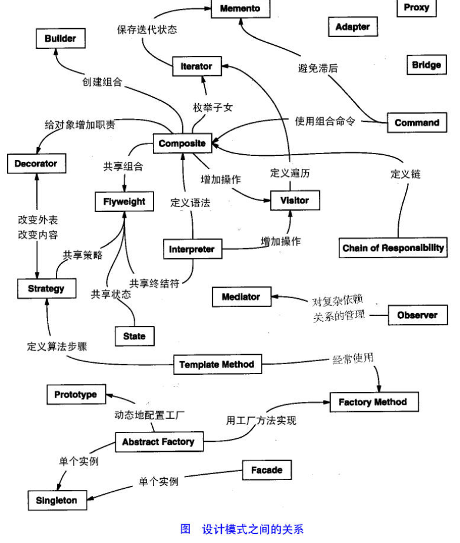

参考文章：
理解 Go interface 的 5 个关键点其中描述有一些错误，但是讲了大部分的知识点了。
Java开发中的23种设计模式详解(转)
设计模式原则
- 开闭原则（Open Close Principle）
开闭原则就是说对扩展开放，对修改关闭。在程序需要进行拓展的时候，不能去修改原有的代码，实现一个热插拔的效果。 所以一句话概括就是：为了使程序的扩展性好，易于维护和升级。想要达到这样的效果，我们需要使用接口和抽象类，后面的具体设计中我们会提到这点。 里氏代换原则（Liskov Substitution Principle）
里氏代换原则(Liskov Substitution Principle LSP)面向对象设计的基本原则之一。 里氏代换原则中说，任何 基类可以出现的地方，子类一定可以出现。 LSP是继承复用的基石，只有当衍生类可以替换掉基类，软件单位的功能不受 到影响时，基类才能真正被复用，而衍生类也能够在基类的基础上增加新的行为。里氏代换原则是对“开-闭”原则的补充。 实现“开-闭”原则的关键步骤就是抽象化。而基类与子类的继承关系就是抽象化的具体实现，所以里氏代换原则是对实现抽 象化的具体步骤的规范。—— From Baidu 百科依赖倒转原则（Dependence Inversion Principle）
这个是开闭原则的基础，具体内容：真对接口编程，依赖于抽象而不依赖于具体。接口隔离原则（Interface Segregation Principle）
这个原则的意思是：使用多个隔离的接口，比使用单个接口要好。还是一个降低类之间的耦合度的意思，从这儿我们看出， 其实设计模式就是一个软件的设计思想，从大型软件架构出发，为了升级和维护方便。所以上文中多次出现：降低依赖，降低耦合。迪米特法则（最少知道原则）（Demeter Principle）
为什么叫最少知道原则，就是说：一个实体应当尽量少的与其他实体之间发生相互作用，使得系统功能模块相对独立。合成复用原则（Composite Reuse Principle）
原则是尽量使用合成/聚合的方式，而不是使用继承。
设计模式分类
总体来说设计模式分为三大类：
创建型模式，共五种：工厂方法模式、抽象工厂模式、单例模式、建造者模式、原型模式。
结构型模式，共七种：适配器模式、装饰器模式、代理模式、外观模式、桥接模式、组合模式、享元模式。
行为型模式，共十一种：策略模式、模板方法模式、观察者模式、迭代子模式、责任链模式、命令模式、备忘录模式、状态模式、访问者模式、中介者模式、解释器模式。
其实还有两类：并发型模式和线程池模式。用一个图片来整体描述一下：

创建型
创建型模式(Creational Pattern)对类的实例化过程进行了抽象，能够将软件模块中对象的创建和对象的使用分离。为了使软件的结构更加清晰，外界对于这些对象只需要知道它们共同的接口，而不清楚其具体的实现细节，使整个系统的设计更加符合单一职责原则。
Factory Method
许多的类型有相同的方法将类型对象使用工厂模式生产从而增加产品的可变性。
工厂模式适合：凡是出现了大量的产品需要创建，
并且具有共同的接口时，可以通过工厂方法模式进行创建
下面的代码示例已有一个产品系列，其实可以有多个产品系列。
go代码实现：1
2
3
4
5
6
7
8
9
10
11
12
13
14
15
16
17
18
19
20
21
22
23
24
25
26
27
28
29
30
31
32
33//笔
type pen interface {
Write()
}
type pencil struct {}
func (p *pencil) Write() {
fmt.Println("铅笔")
}
type brushPen struct {}
func (p *brushPen) Write() {
fmt.Println("毛笔")
}
//工厂
type PenFactory struct {
}
func (this PenFactory) Produce(typ string) pen {
switch typ {
case "pencil":
return this.ProducePencil()
case "brush":
return this.ProduceBrushPen()
default:
return nil
}
}
func (PenFactory) ProducePencil() pen {
return new(pencil)
}
func (PenFactory) ProduceBrushPen() pen {
return new(brushPen)
}
Abstract Factory
工厂方法模式有一个问题就是，类的创建依赖工厂类，也就是说，如果想要拓展程序，必须对工厂类进行修改，这违背了闭包原则，所以，从设计角度考虑，有一定的问题，如何解决？就用到抽象工厂模式，创建多个工厂类，这样一旦需要增加新的功能，直接增加新的工厂类就可以了，不需要修改之前的代码。
go 代码实现：1
2
3
4
5
6
7
8
9
10
11
12
13
14//抽象工厂
type AbstractFactory interface {
Produce() pen //生产笔
}
type PencilFactory struct {}
func (PencilFactory) Produce() pen {
return new(pencil)
}
type BrushPen struct {}
func (BrushPen) Produce() pen {
return new(brushPen)
}
通过添加抽象工厂的方式，就能通过添加新的类型的方式扩展产品，而不是通过修改工厂类。
Builder
工厂类模式提供的是创建单个类的模式，而建造者模式则是将各种产品集中起来进行管理，用来创建复合对象，所谓复合对象就是指某个类具有不同的属性。
Builder注重将不同的产品组合起来管理，及复合对象有一些集体的方法，像下面算菜单的价格。处理由子集自由组合成一个集体的问题。
go 代码实现：1
2
3
4
5
6
7
8
9
10
11
12
13
14
15
16
17
18
19
20
21
22
23
24
25
26
27
28
29
30
31
32
33
34
35
36
37
38
39
40
41
42
43
44
45
46
47
48
49
50
51
52
53
54
55
56
57type Item interface {
Price() float32
Name() string
Category() string // 类别 Food 或者 Drink
}
//食物
type Food struct {
}
func (Food) Price() float32 {
return 0.0
}
func (Food) Name() string {
return ""
}
func (Food) Category() string {
return "Food"
}
//汉堡
type Hamburger struct {
Food
}
func (Hamburger) Price() float32 {
return 12.00
}
func (Hamburger) Name() string {
return "Hamburger"
}
... // Drink类和其他具象类。
type Meal []Item
func (this *Meal) AddItem(item ...Item) {
*this = append(*this, item...)
}
func (this Meal) GetCost() (cost float32) {
for _, val := range this {
cost += val.Price()
}
return
}
func (this Meal) ShowItems() (msg string) {
for _, val := range this {
msg += "Category：" + val.Category() + " Name:" + val.Name() + "\n"
}
return
}
//建造者
type MealBuilder struct {
}
func (MealBuilder) MealOne() (meal *Meal) {
meal = new(Meal)
meal.AddItem(new(FriedChicken), new(Beer))
return
}
Singleton
结构型
结构型模式(Structural Pattern)描述如何将类或者对 象结合在一起形成更大的结构，就像搭积木，可以通过 简单积木的组合形成复杂的、功能更为强大的结构。
行为型
行为型模式(Behavioral Pattern)是对在不同的对象之间划分责任和算法的抽象化。
通过行为型模式，可以更加清晰地划分类与对象的职责，并研究系统在运行时实例对象 之间的交互。在系统运行时，对象并不是孤立的，它们可以通过相互通信与协作完成某些复杂功能，一个对象在运行时也将影响到其他对象的运行。
Visitor模式
访问者模式把数据结构和作用于结构上的操作解耦合，使得操作集合可相对自由地演化。访问者模式适用于数据结构相对稳定算法又易变化的系统。因为访问者模式使得算法操作增加变得容易。若系统数据结构对象易于变化，经常有新的数据对象增加进来，则不适合使用访问者模式。访问者模式的优点是增加操作很容易，因为增加操作意味着增加新的访问者。访问者模式将有关行为集中到一个访问者对象中，其改变不影响系统数据结构。其缺点就是增加新的数据结构很困难。—— From 百科
主要将数据结构与数据操作分离
- 对象结构中对象对应的类很少改变，但经常需要在此对象结构上定义新的操作。
- 需要对一个对象结构中的对象进行很多不同的并且不相关的操作，而需要避免让这些操作”污染”这些对象的类，也不希望在增加新操作时修改这些类。
go代码实现：1
2
3
4
5
6
7
8
9
10
11
12
13
14
15
16
17
18
19
20
21
22
23
24
25
26
27
28
29
30
31
32
33
34
35
36
37type Visitor interface {
Visit(DataStruct)
}
type DataStruct interface {
Accept(Visitor)
}
type ABData struct {
A int
B int
}
func (as *ABData)Accept(vi Visitor){
vi.Visit(as)
}
type AddVisitor struct {}
func (av *AddVisitor)Visit(dataS DataStruct){
data:=dataS.(*ABData)
sum:=data.A+data.B
fmt.Println("A+B=",sum)
}
type SubVisitor struct {}
func (sv *SubVisitor)Visit(dataS DataStruct){
data:=dataS.(*ABData)
sum:=data.A-data.B
fmt.Println("abs(A-B)=",math.Abs(float64(sum)))
}
func VisitorTest(){
Data:=&ABData{A:8,B:10}
add:=&AddVisitor{}
sub:=&SubVisitor{}
Data.Accept(add)
Data.Accept(sub)
}